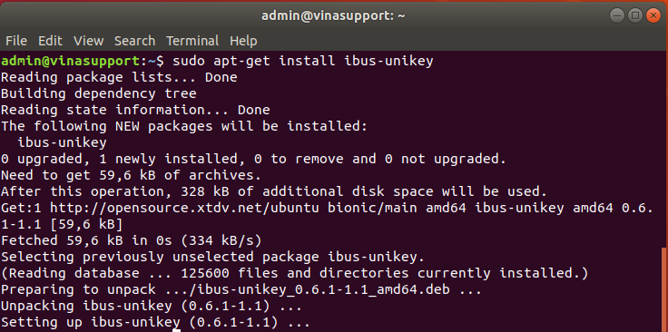
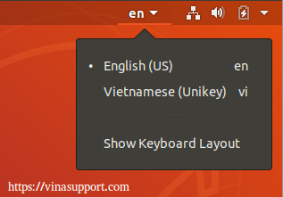

Hướng dẫn cài bộ gõ tiếng Việt trên Ubuntu
Để có thể gõ tiếng Việt, Ubuntu có hỗ trợ bộ gõ tiếng Việt là ibus-unikey. Trong bài viết này mình sẽ hướng dẫn các bạn cài bộ gõ tiếng Việt (ibus-unikey) trên Ubuntu 18.04 LTS với các thao tác đơn giản. Bài viết này áp dụng được cho cả phiên bản mới nhất là Ubuntu 19.04, Ubuntu 19.10 và Ubuntu 20.04 LTS.
Cài đặt ibus-unikey
Mở terminal, thực hiện lệnh sau để cài đặt ibus-unikey:
sudo apt install ibus-unikey

Trường hợp phiên bản Ubuntu của bạn chưa có sẵn gói ibus-unikey thì hãy chạy hai lệnh sau để thêm vào:
sudo add-apt-repository ppa:ubuntu-vn/ppa
sudo apt-get update
Khởi động lại phần mềm ibus
Để khởi động lại ibus, các bạn dùng command sau:
ibus restart
Thiết lập gõ tiếng Việt cho ibus trên Ubuntu
Bước 1: Tìm kiếm chức năng quản lý [ Settings ]
Bước 2: Ở cửa sổ [ Settings ] -> [ Region & Language ] -> [Input Sources ] -> Bấm [ + ] để thêm một input source
Bước 3: Ở cửa sổ [ Add an Input Source ] -> Tìm kiếm ngôn ngữ là “Vietnamese” -> Chọn là “Vietnamese (Unikey)” -> Bấm “Add”
Chú ý: Đối với Ubuntu 18.10 trở lên, khi tìm kiếm với “Vietnamese“, nó sẽ chỉ hiển thị Vietnamese. Các bạn bấm tiếp vào “Vietnamese” nó sẽ xổ ra 2 dòng như bên trên.
Bước 4: Sau đó restart lại Ubuntu và xác nhận Ibus-Unikey đã có 2 ngôn ngữ là tiếng Anh và tiếng Việt

Bạn có thể chuyển đổi qua lại giữa hai ngôn ngữ bằng phím tắt là "Windows + Space".
Tham khảo
Hướng dẫn cài bộ gõ tiếng Việt ibus-unikey trên Ubuntu 18.04 LTS
How to install Vietnamese input method on Ubuntu 18.04 LTS - ibus-unikey - Vu Quang Son's Blog